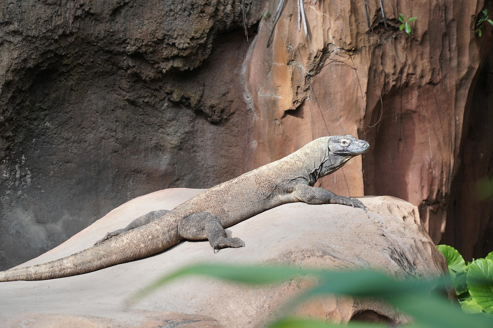
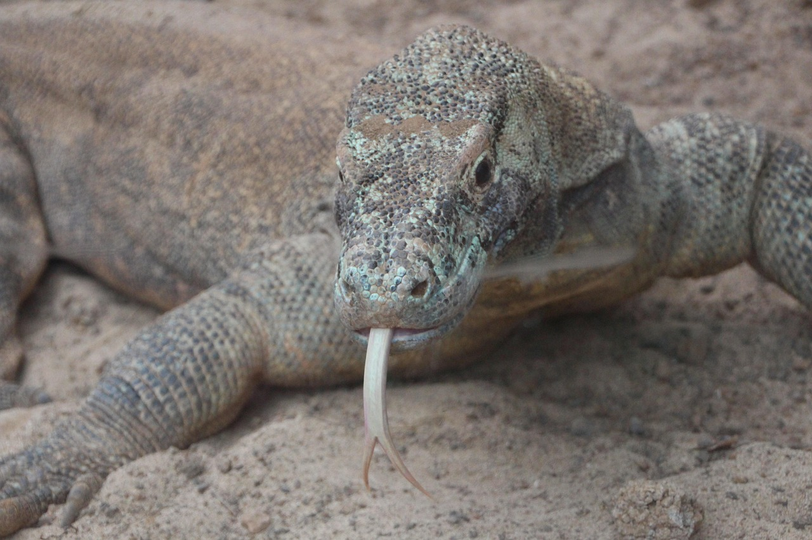
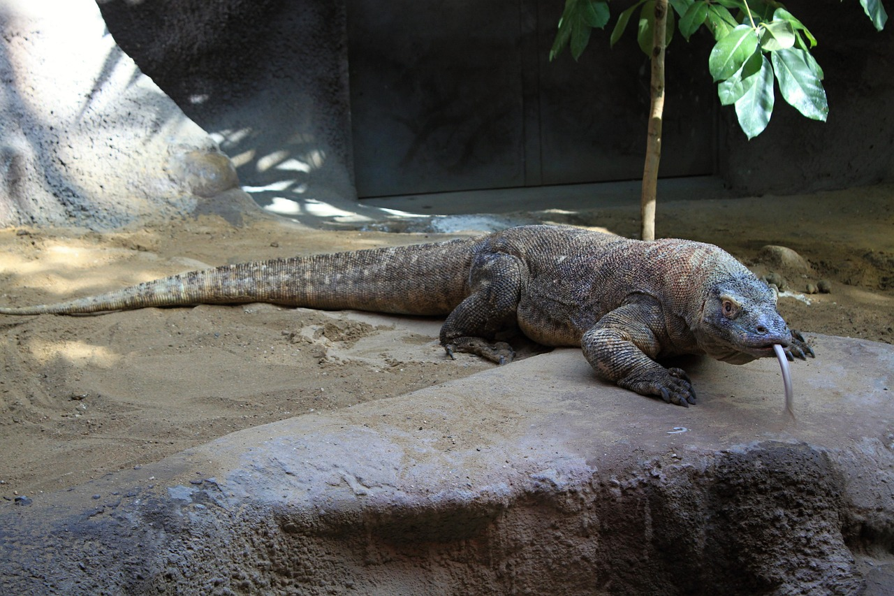

What Is Komodo?

Komodo is a giant lizard that lives in Indonesia, especially in Komodo Island, Rinca, and it's surroundings. This animal can grow more than 2-3 meters, strong body, and have a venomous bite that helps them drop their prey, They are apex predator that hunts deer, pig, even buffalo, and famous as one of the biggest and strongest reptile in the world.
Fun Fact

Komodo lives in several islands in Indonesia like Komodo, Rinca, and Flores, usually in dry savanna and hot forest. They have forked tongue to detect smells, iron layered strong teeth, and venomous bite that makes prey become weak. Besides being able to hunt big animal by ambushing them, komodo also unique because the female komodo can reproduce without a male. Their living area is protected under Taman Nasional Komodo, that also one of the UNESCO heritage sites.
Why Cares?

We need to cares because Komodo is a rare animal that only lives in Indonesia, if they become extinct, the world will lose an unique species and Indonesia will lose it's important nature identity, Komodo also protect the ecosystem balance in their island where they live, so if they lost, the food chain can become problematic. Besides that, the komodo appearence gives big benefit through tourism and scientific study, so protect them means protect the nature, economy, and our country heritage.
| Questions |
Information |
| Origin |
Indonesia |
| Location |
Pulau Komodo, Rinca, Flores dan lain-lain |
| Characteristics |
Venomous bite, forked tongue, strong teeth |
| Status |
Endangered |